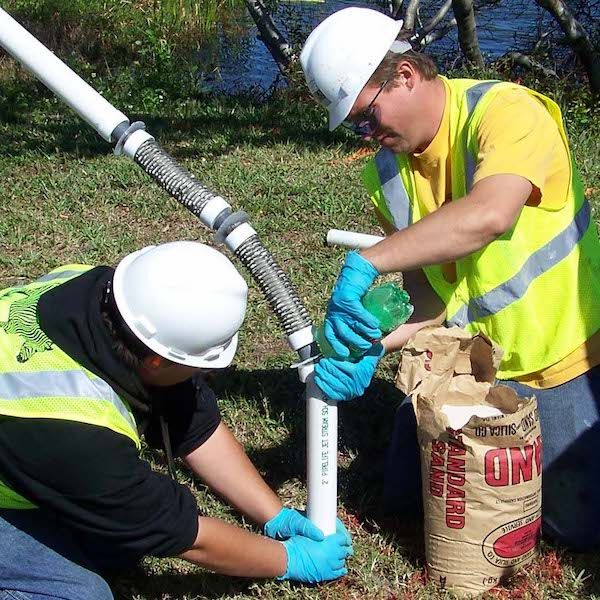
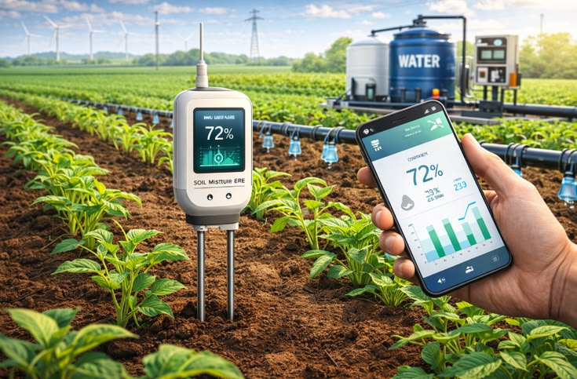
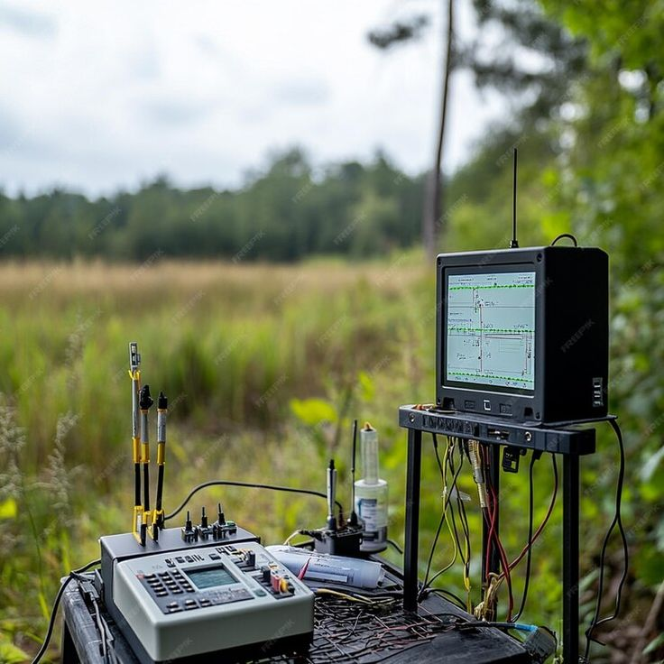

100cm Deep Coring
Hydraulic subsoil coring extracting bulk density samples to measure mineral carbon.

Actionable biological assays, rotational grazing blueprints, and verifiable subsoil carbon accounting.
Measuring active biology and real-time plant nutrition beyond synthetic chemistry.
Active biomass enumeration to establish crop succession fitness.
Predatory counts governing natural nitrogen mineralization.
WEOC and WEON testing indicating readily digestible microbial fuel.
Base saturation ratios determining natural soil aeration.
Custom operational planning matching animal stocking with seasonal forage growth.
Satellite mapping creating cell corridors, water points, and electric fencing.
Dry matter yield budgeting based on rainfall patterns and rest intervals.
Bite-rate monitoring to maximize animal health and average daily weight gains.
Empirical field measurement protocols meeting international carbon registry standards.

Hydraulic subsoil coring extracting bulk density samples to measure mineral carbon.

Optical spectral scanning providing cost-effective carbon density mapping.
Transparent registries enabling corporate supply chain decarbonization.
A seamless three-phase onboarding roadmap from specimen intake to on-farm execution.
We mail pre-labeled field sampling coolers with GPS plot protocols.
Our accredited laboratory analyzes fungal balances and mineral saturations.
You receive tailored cover crop blends and grazing management plans.